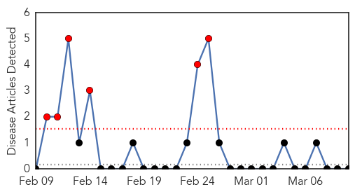
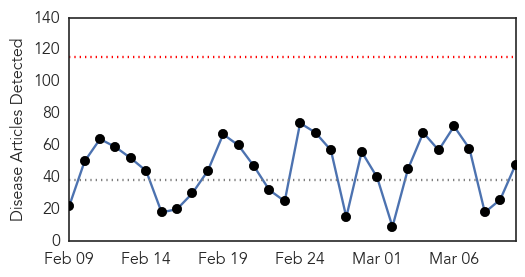
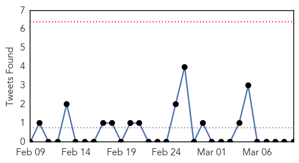
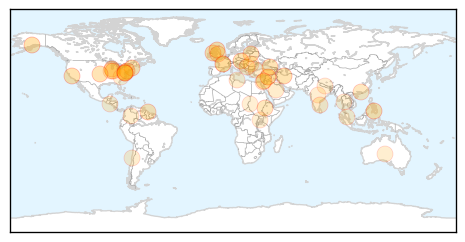
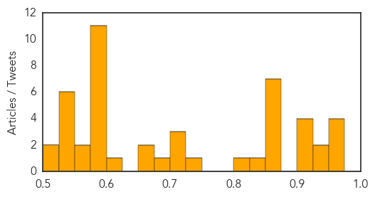

West Nile Virus
30-Day Web Trend
6 alerts, 0 warnings

30-Day Twitter Trend
0 alerts, 0 warnings

Article Locations

Article Confidences

Top Articles:
-
No articles found for Mar 10, 2014
Top Tweets:
-
No tweets found for Mar 10, 2014
Unknown
30-Day Web Trend
0 alerts, 0 warnings

30-Day Twitter Trend
0 alerts, 0 warnings

Article Locations
Article Confidences
Top Articles:
- 0.974
- Cases of 'extremely contagious' scarlet fever soar to 24 year high
- 0.969
- Will climate change bring back SMALLPOX? Siberian corpses could ooze contagious virus if graveyards thaw out, claim scientists
- 0.969
- Will climate change bring back SMALLPOX? Siberian corpses could ooze contagious virus if graveyards thaw out, claim scientists
- 0.959
- Cebu News, The Freeman Sections, The Freeman
- 0.940
- Scarlet fever cases at 24-year high
- 0.933
- How virus sleuths and public health officials track the cause of a mysterious illness
- 0.917
- Chicago Tribune
- 0.917
- Chicago Tribune
- 0.917
- Chicago Tribune
- 0.917
- Chicago Tribune
- 0.866
- U.S. senators from the Senate Climate Action Task Force gather before holding the Senate floor to urge action on climate change on Capitol Hill in Washington
- 0.866
- NATO to fly AWACS over Poland, Romania to monitor Ukraine crisis
- 0.866
- Why does Terre des hommes sell oranges ?
- 0.866
- Lavrov says Russia has proposals to resolve Ukrainian "situation"
- 0.866
- U.S. top court declines to hear "I (heart sign) boobies" case
- 0.866
- Israeli Arab sentenced to 25 years for Tel Aviv bus bomb
- 0.854
- Malaria cases on the decline in Guyana
- 0.830
- South Lithuania's forests to be fenced :: The Baltic Course
- 0.805
- Climate change could boost malaria deaths, study says TckTckTck
- 0.738
- Strict poultry tests will do, says expert
- 0.725
- Serious diarrheal infection in kids linked to antibiotics
- 0.724
- Could climate change bring back smallpox?
- 0.719
- Severe C. difficile infections occur among children who prescribed antibiotics in doctor's offices
- 0.684
- Chicken pox cases surface in Chennai, earlier than usual
- 0.672
- The Voice of Russia: News, Breaking news, Politics, Economics, Business, Russia, International current events, Expert opinion, podcasts, Video
- 0.654
- 70 vehicles for palliative care donated
- 0.618
- Local hospitals working to combat overuse of antibiotics
- 0.595
- Scant evidence of attack on lost Malaysia Airlines flight
- 0.595
- Video transplants childhood horror of Syrian war to London
- 0.595
- 900,000 Syrians take refuge in Turkey, says UNICEF
- 0.595
- Saudi Arabia slams Maliki’s ‘irresponsible’ comments to FRANCE 24
- 0.595
- NATO to deploy jets to monitor Ukraine crisis
- 0.595
- Libyan troops seize North Korea-flagged oil tanker
- 0.595
- EU's Ashton makes landmark visit to Tehran
- 0.595
- Both candidates claim victory in El Salvador presidential runoff
- 0.595
- Ex-Colombian president storms back into politics
- 0.595
- Chanel accused of “systematic smuggling” in Turkey
- 0.590
- CDC Plans to Map DNA of Disease-Causing Viruses : Roll Call Policy
- 0.571
- Warmer weer zorgt voor toename malaria
- 0.558
- New blood test predicts Alzheimer's, dementia
- 0.545
- GMCH observing glaucoma week
- 0.540
- Beating malaria's fatal bite
- 0.530
- Mission Health announces community health events for March 10-14
- 0.530
- Disease ravages Tanzania crops
- 0.527
- Blood test may predict onset of Alzheimer’s and related disease, new study finds
- 0.526
- Animal-borne parasites plague Nepal
- 0.522
- FAU chickenpox cases in Davie reported
- 0.521
- Mass displacements triggered by renewed violence in North and South Darfur
Top Tweets:
- 0.522
- 2 days until our Flu Vaccination Awareness Campaign launch. Be Flu Smart this year: http://t.co/qS3SUnMztZ